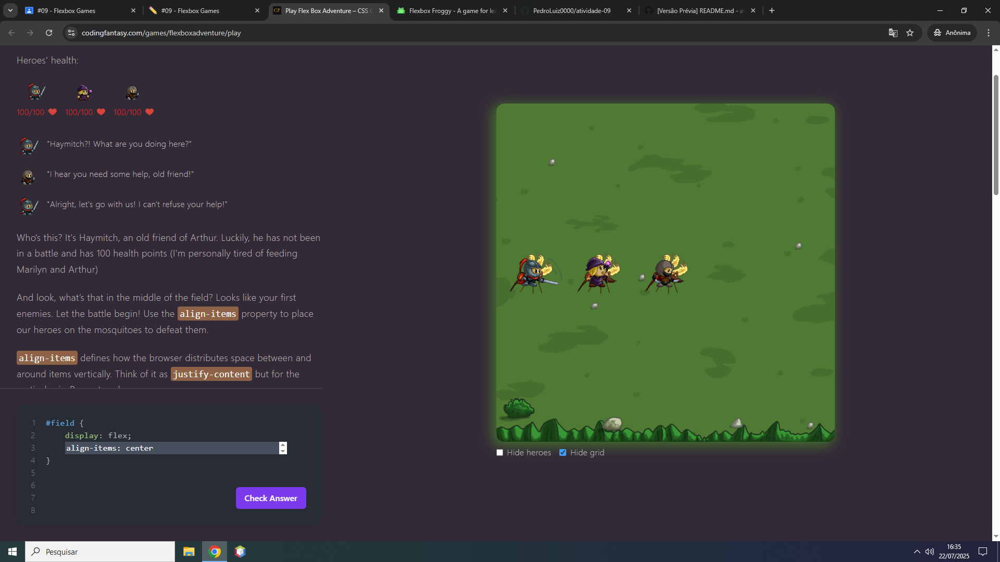
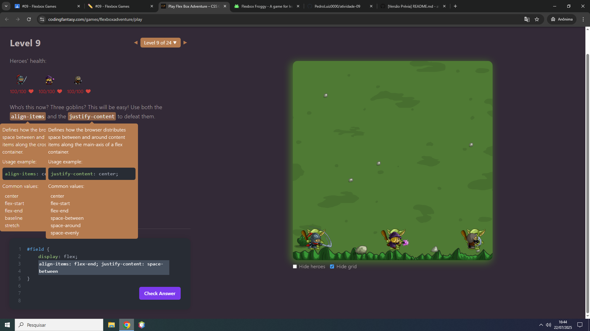

Registro da Experiência com Jogos Interativos
Pedro Luiz Lopes Pereira
Jogos Escolhidos
1. Flexbox Froggy
Acessar jogo
Escolhi o FlexBox Froggy pois foi o que mias me chamou atenção quando vi a iumagem principal
2. Play Flex Box Adventure
Acessar jogo
Escolhi o Play Flexbox Adventure por meio de sorteio, já que não sabia qual o próximo que iria escolher.
Níveis com dificuldade
Flexbox Froggy
Os níveis 2, 7 e 10 foram os mais desafiadores por, por exemplo, o nível 2 introduzia uma nova propriedade, os demais que já estavam mais para o final eram desafiadores pois combianvam várias propriedades, dificultava pela necessidade de combiná-las.
Play Flex Box Adventure



Nos níveis 3, 6 e 9 o jogo apresentou desafios pois eram estes os níveis que introduzia um novo conceito que tive que testar para entender como funcionava. O nível 9 combinava os conceitos aprendidos antes, dificultou pois era preciso lembrar de todos e utilizá-los em conjunto para a conclusão da fase.
Reflexão e Aplicação Prática
Propriedades CSS utilizadas:
- display: flex — Ativa o modelo Flexbox para o container.
- flex-direction — Define a direção dos itens (linha ou coluna).
- justify-content: center — Centraliza os itens horizontalmente no container.
- justify-content: space-between — Distribui os itens com espaço entre eles, sem margens nas extremidades.
- justify-content: space-around — Distribui os itens com espaço ao redor de cada um (espaços iguais entre todos).
- align-items: center — Alinha todos os itens verticalmente ao centro do container.
- align-items: flex-start — Alinha os itens verticalmente ao topo do container.
- align-items: flex-end — Alinha os itens verticalmente à parte inferior do container.
- align-self — Permite alterar o alinhamento individual de um item.
- flex-grow — Controla quanto o item irá crescer em relação aos outros dentro do espaço disponível.
- flex-wrap — Permite que os itens quebrem a linha e passem para outra linha, se necessário.
Aplicação prática com Flexbox:
Um exemplo prático seria um menu de navegação responsivo. Com Flexbox,
eu criaria uma nav com `display: flex`, distribuiria os itens com `justify-content:
space-between` e, em telas menores, mudaria para `flex-direction: column` usando media queries.
Isso garante uma boa experiência de navegação em qualquer dispositivo.